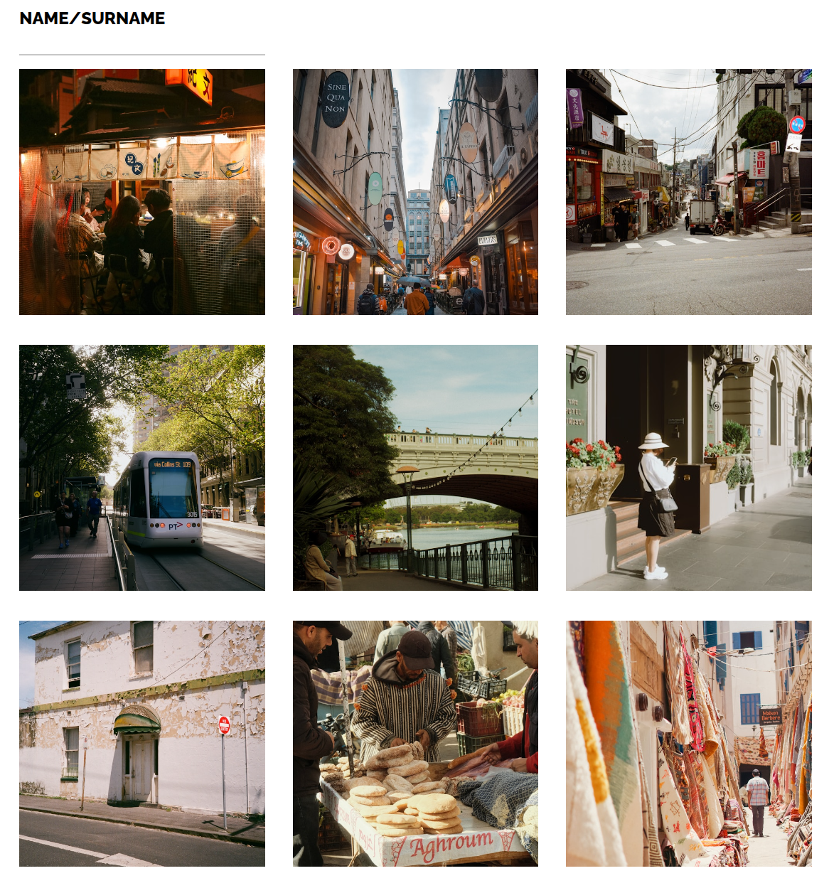

Overview
Date: June 16 - June 22, 2025
- Lessons done: Sections 8, 9, and the start of 10 (yay! Flexbox)
- Topics: Box Model, assorted CSS properties (opacity, transitions, transforms, backgrounds, Google Fonts), and Flexbox
- Breaks in study: Yes, a massive one. Two weeks of nothing before this "Week 2" even began. My "Week 1" was basically a ghost town.
- Current mental state: Meh
The Box Model and Mental Spiral
I guess this was Week 2? Turns out, I started studying on June 3rd, did a few days of lessons, got all excited, and did some exercises, thinking I was on a roll. Classic fake comeback arc. By the 6th, I'd vanished again. Fully gone. Two full weeks of nothing but opening the course tab and staring at it like that would somehow do the studying for me. Spoiler: it didn't. I was trying things in a "tiny habits" way, opening the course every day. It got me nowhere.
Then last Thursday (June 19th), I somehow got back into the rhythm. It was kind of random, honestly, but I just… convinced myself. I had to get back into it. And more importantly, I had to ditch this "just do the minimum and it'll snowball from there" mindset. That doesn't work for me. Because I *was* opening the damn course, every day. And then closing it five minutes later. If anything, that just made me feel worse. So now I'm trying to study like I actually care: sit down, do it for a couple hours, and remind myself I actually like this stuff. It's not torture. I enjoy it, even when it's frustrating. I just need to remind myself of that when I go down the guilt spiral after procrastinating.
So what did I actually learn?
I went through Section 8: A lot of new terms, but everything made a lot of sense. Foundational things, I guess: width, height, border, padding, margin, and how every element is secretly just a little diva box demanding space and attention. Display properties like 'inline-block', 'block', and 'inline', which I know will matter more once I encounter them in the future. For now, it's just a chaotic soup of boxes, and I'm not entirely sure how they interact with each other.
Also got introduced to 'em' and 'rem', which are like fraternal twins of the CSS units. One's based on the parent, the other on the root, whatever that means. They both seem helpful, and I get the gist, but using them practically? Still a big nope. I'll probably break something later and then understand them out of sheer desperation.
Then I went into Section 9: a chaotic mashup of properties, transitions, transforms, opacity, background images, Google Fonts, etc. A bit of everything. The kind of stuff that's easy to follow in the lesson but impossible to retain unless I grind it for weeks. Which I didn't. So now it's just swimming somewhere in the back of my brain, hoping I can at least remember the name when I need to look it up.
But look, I made this cool-looking photo blog in grid:
And then, the big one: Flexbox. This section actually flew by! I think it's because I had a brief encounter with it last year when I tried The Odin Project's foundation course. So, while I still get my brain tied in knots differentiating between 'justify-content' and 'align-items', and while 'flex-grow' and 'flex-shrink' are still a struggle, it felt somewhat familiar. What seems simple but becomes harder when you want to make something specific, is when you change the flex-direction and then suddenly 'align-items' is doing 'justify-content's job, and vice-versa. Add wrapping to that, and I'm utterly, completely lost. My mind just blows up. Seriously, it's a mess. Can't remember when to use which and usually just go by vibes or Google some cheatsheet.
Those were pretty much the last lessons I covered this week. So, for now, this week was a chaotic summary of various CSS concepts, some made sense, some are still murky, and some are just plain frustrating. I want to try adding a responsive navigation to my own site soon, even if it's super simple and clunky. Maybe I'll make it change colors or mess with the existing weekly navigation.
Final Thoughts
Lessons Learned:
Turns out, "doing the minimum" is a sure way to do absolutely nothing. At least for me. I need to actively pursue progress and acknowledge that I actually enjoy this process, even the frustrating bits. Flexbox is both fun and my worst nightmare, especially when flex-direction decides to play mind games.
Frustration Level:
7/10 (mostly thanks to the lingering frustration of the two-week hiatus).